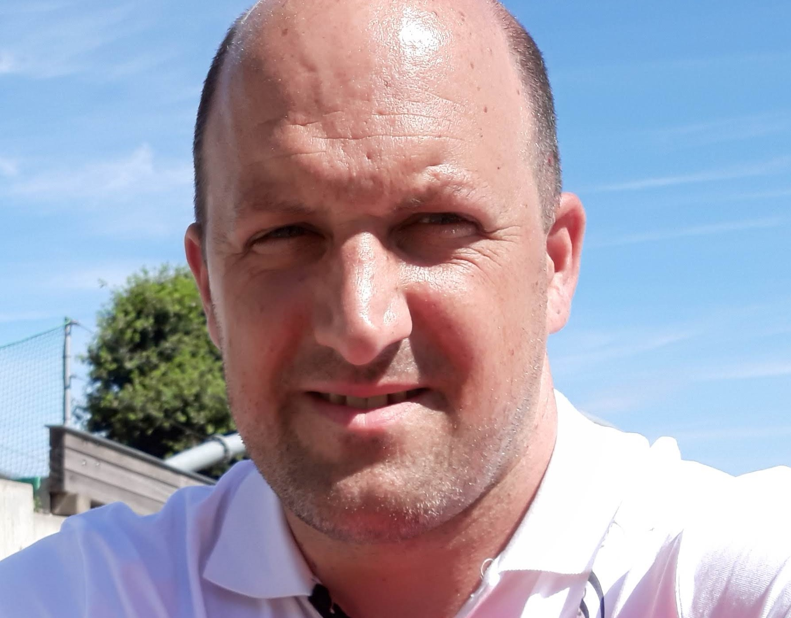

Aangenaam
Ik ben Wim, getrouwd met Marije en vader van twee lieve kinderen, Jeftha van 9 jaar en Thalita van 1 jaar.
Na de basisschool ben ik naar het VMBO gegaan. Hier maakte ik de keuze om de bouw kant op te gaan, waarna ik uiteindelijk de keuze timmerman gemaakt heb, niet zo heel raar als je vader ook timmerman is. Nadat ik mijn examen behaalde ben ik gaan werken en leren, één dag in de week naar school en vier dagen werken. Ik behaalde primair en voortgezet timmeren in drie jaar. Waarna ik begon met de avondopleiding Assistent Uitvoerder.
Vervolgens vroeg een broer, die al jaren een onderhoudsbedrijf runde, mij of ik voor hem wilde komen werken. Helaas kon ik als ZZP-er daardoor de opleiding niet afmaken. Ik schreef mij vervolgens in voor de avond MBO-bouwkunde en behaalde na vier jaar mijn diploma.
Toen was ik klaar met die stoffige schoolbanken. De eerst jaren heb ik als allround timmerman diverse onderhoudswerkzaamheden en verbouwingen gedaan. Door aanleverings problemen van ramen en kozijnen zijn we deze van lieverlee zelf gaan produceren. Hierdoor kwam de keuze om helemaal over te schakelen naar machinale houtbewerking en maken nu houten ramen, deuren en kozijnen en diverse profileerwerk.
Nu al 22 jaar werkzaam in de bouwwereld voel ik aan mijn lijf dat ik het zware werk mogelijk niet tot mijn pensioen ga volhouden. Vandaar dat ik mij heb ingeschreven voor de opleiding tot Back-end Developer. Ik knutsel altijd al graag met de computer, Raspberry Pi of Arduino. En heb veel geleerd over computers van een IT-er die bij ons in het pand zat. Verdre heb ik thuis een domotica systeem geinstalleerd op een Raspberry Pi met OpenHAB. Maar elke keer loop ik tegen de grenzen aan dat ik niet zelf kan programmeren. Dus uit hobby oogpunt had ik al enige interesse. Nu wil ik kijken of ik daar ook mijn brood mee kan verdienen.....
